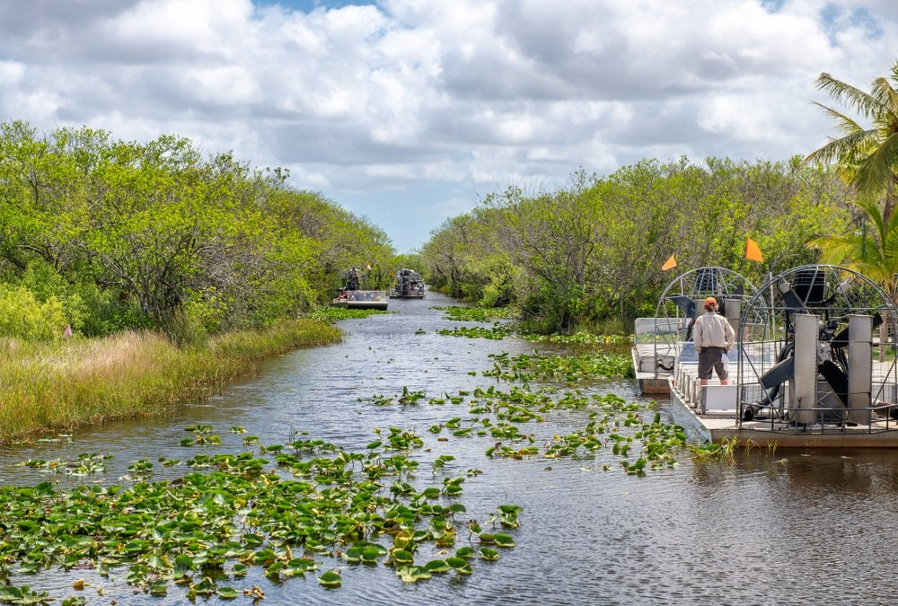

A bien des égards, l’une des villes les plus attirantes des Etats Unis, lieu de rendez-vous
des culturistes, haut lieu de la vie nocturne et adresse cosmopolite, Miami est une de ces villes
aux multiples visages qui possèdent tout ce qu’il faut pour plaire à tout le monde : de
sa gastronomie à ses pubs, bars et cafés branchés en passant par son sable fin et ses boutiques,
jusque dans ses paysages environnants.
Métropole séduisante et animée, vous vous perdrez à Miami parmi les cubains nostalgiques de Little
Havana, croiserez peut-être des célébrités, flânerez dans les quartiers à la déco avant gardiste.
Puis sortez des sentiers battus et du beau cliché de la ville : les environs de Miami regorgent de
sites naturels sublimes comme les Everglades.
Les Everglades

Les Everglades représentent l’une des merveilles naturelles les plus majestueuses de la Floride.
S’étendant sur plus de 550 000 hectares de marécages, c’est le lieu idéal pour observer une biodiversité incroyable :
alligators, tortues, lamantins et même des panthères en liberté.
Sa proximité avec le centre de Miami en fait une activité incontournable, offrant une immersion
totale dans une nature sauvage unique en son genre, facilement accessible en voiture.
Vous pouvez visiter les Everglades de diverses manières, que ce soit à pied, à vélo ou en bateau.
Mais pour une expérience vraiment mémorable, faites une virée en hydroglisseur, pour ressentir
l’excitation de filer à travers les marais. Il est aussi possible de faire une balade en canoë,
une expédition en kayak ou même camper au bord de l’eau.
Le Frost Museum of Science de Miami
L’immense et nouveau musée Frost Science, est un temple de la connaissance et de la découverte.
Divisé en quatre bâtiments, dont l’Aquarium, le Frost Planetarium et les ailes Nord et Ouest,
ce musée propose des expositions toute l’année, offrant un véritable terrain de jeu pour les
esprits curieux de tous âges. Grâce à ses installations ultramodernes, il vous permet d’explorer
un aquarium abritant des créatures marines et de vous émerveiller devant des spectacles de lumière
au dôme du planétarium.
Fidèle à sa mission de connecter les gens à la science, le Frost Science propose une variété de
programmes éducatifs. Parmi ses expositions phares, citons « Feathers to the Stars »,
« Power of Science » et « MeLab », où les enfants peuvent en apprendre davantage sur la santé en
utilisant leur propre corps pour réaliser des expériences interactives. L’Aquarium, s’étalant sur
trois niveaux, est particulièrement spectaculaire, notamment avec son vaste espace dédié au Gulf
Stream. Quant au planétarium, doté d’un écran de projection 8K et d’un système sonore de pointe,
promet des expériences visuelles époustouflantes et des voyages virtuels à travers l’espace.
L’expérience artistique immersive « Superblue Miami »
Dans un monde saturé d’installations se vantant d’être « Instagrammables », Superblue Miami se
démarque en proposant une expérience artistique réellement immersive. Occupant un espace colossal,
ce lieu se consacre entièrement aux médiums expérientiels. Au lieu de simplement satisfaire l’œil,
Superblue Miami vise à déconstruire les perceptions habituelles avec des œuvres d’artistes
renommés, offrant ainsi une expérience curatoriale réfléchie qui stimule tous les sens.
Situé dans le quartier culturel d’Allapattah, Superblue Miami débute avec le programme
« Every Wall Is a Door ». Ce programme présente des environnements immersifs tels que l’œuvre du
scénographe Es Devlin, une expérience digitale transcendantale du collectif artistique japonais
teamLab, et une œuvre basée sur la lumière de l’artiste américain James Turrell. À cela s’ajoute
« Meadow », une installation cinétique de l’atelier d’artistes basé à Amsterdam, DRIFT,
visible dès le hall d’entrée de Superblue. Chaque pièce est conçue pour immerger le visiteur dans
un univers où l’art défie la réalité.
Little Havana
Visiter Miami, c’est aussi goûter à la saveur de Cuba. Little Havana, c’est le quartier qui fait la
fierté des cubains de passage et pour cause, la non moins célèbre Calle Ocho (SW 8th Street) et
les alentours témoignent du rêve américain poursuivi par des centaines de milliers de Cubains
ayant fui à Miami après l’arrivée au pouvoir de Fidel Castro en 1959.
Ici, vous trouverez de nombreux restaurants et magasins, répliques de leurs ancêtres.
Les maisons de style méditerranéen et leurs chaises à bascule sous le porche, les senteurs
parfumées du tabac qui flottent dans les magasins de cigares et le ronronnement de la musique
latine de tous les magasins de disques proposent un aller simple vers Cuba, comme si vous y étiez.
Notez qu’il est possible de découvrir Little Havana au cours d’une visite guidée qui allie
dégustation culinaire, visites de boutiques et découverte historique, le tout agrémenté de musique
et de danse traditionnelles.